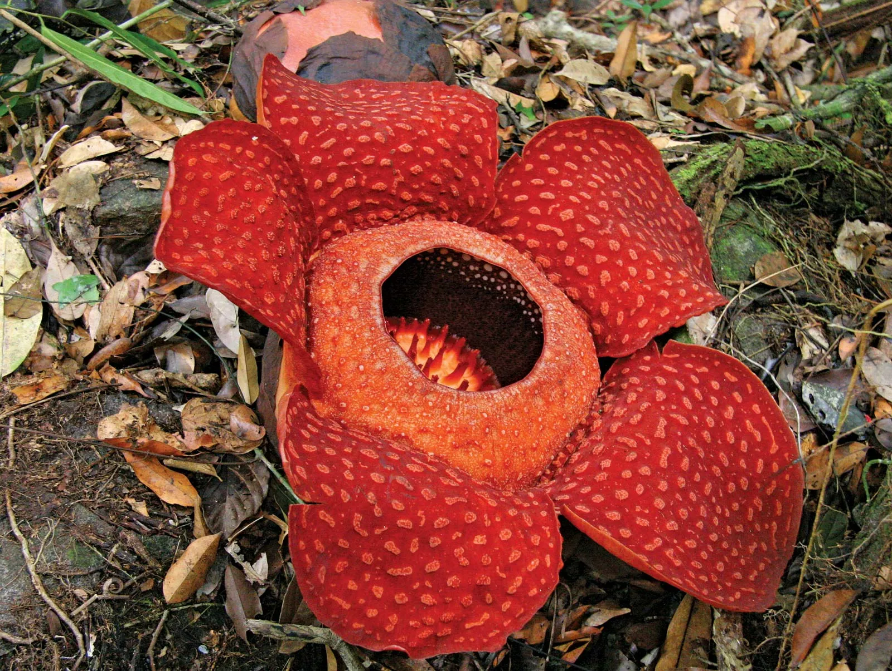
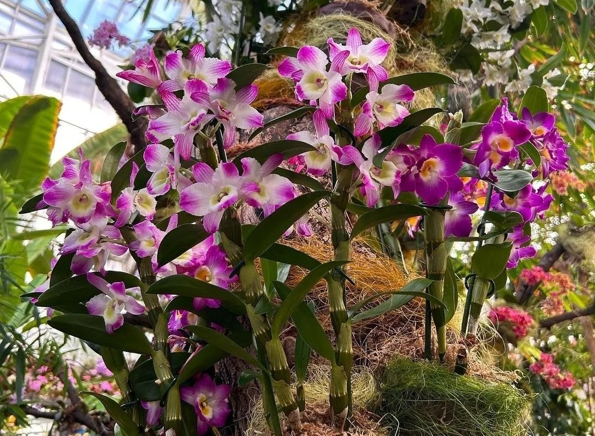
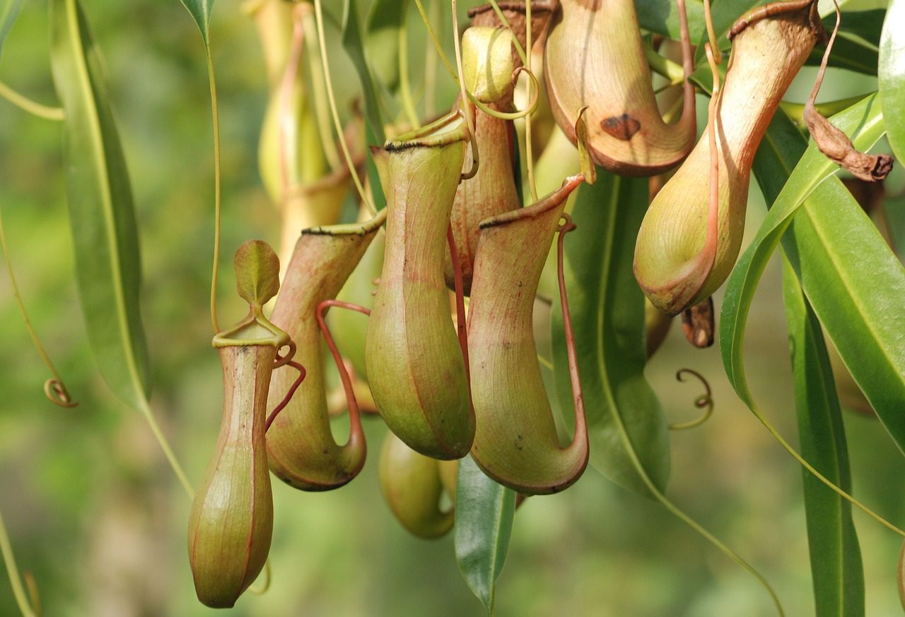
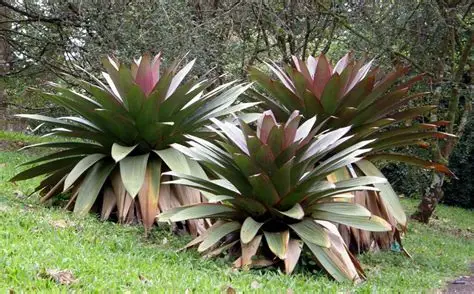
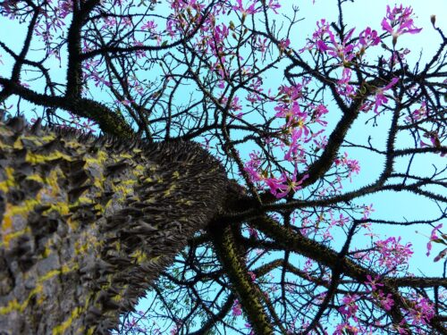
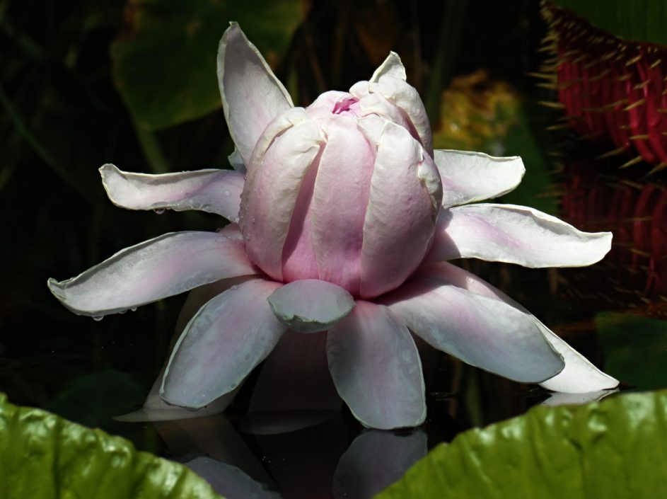

Az esőerdők növényei
Fedezd fel a trópusi esőerdők lenyűgöző növényvilágát — a hatalmas fáktól az apró orchideákig, a különleges húsevő növényektől a gyógyító hatású növényekig.
0
növényfaj él az esőerdőkben
0
a modern gyógyszerek negyede esőerdei növényekből származik
0
a világ oxigénjének közel harmada az esőerdőkből származik
Az esőerdő rétegei
Az esőerdő növényvilága négy fő rétegre oszlik, mindegyik egyedi növényfajoknak ad otthont.
Óriásfák rétege
60–80 mA legmagasabb fák, amelyek a lombkorona fölé emelkednek. Ide tartozik például a brazil dió és a kapokfa. Ezek a fák hatalmas mennyiségű napfényt kapnak.
Lombkorona
25–45 mA legsűrűbb réteg, ahol a fák koronái összeérnek és egy zöld „ernyőt" alkotnak. Itt él az esőerdei élőlények többsége. Orchideák, broméliák és liánok borítják az ágakat.
Aljnövényzet
5–25 mKevés fény jut le ide, ezért a növények hatalmas leveleket fejlesztenek. Páfrányok, helikóniák és fiatal fák élnek ebben a félhomályos rétegben.
Erdőtalaj
0–5 mAz erdő legsötétebb rétege. Mohák, gombák és bomló levelek borítják. A napfénynek csupán 2%-a jut le ide, mégis fontos szerepet tölt be a tápanyag-körforgásban.
Különleges növények
Ismerd meg az esőerdők legérdekesebb növényeit!

Rafflesia
A világ legnagyobb virága, átmérője elérheti az 1 métert! Kellemetlen szaga miatt „hullabűzvirágnak" is nevezik. Délkelet-Ázsia esőerdőiben található.

Orchideák
Több mint 25 000 faj létezik, és rengeteg közülük az esőerdőkben él. Más növényekre telepedve, a levegőből és az esőből nyerik tápanyagaikat.

Kancsóka
Csőszerű leveleivel csapdába ejti a rovarokat. A kancsó belsejében lévő emésztőfolyadék segítségével bontja le zsákmányát, így nyerve tápanyagot.

Broméliák
Levélrózsáikban esővizet gyűjtenek, ami apró tavakként szolgál békáknak, rovaroknak és más élőlényeknek. Fontosak az esőerdő ökoszisztémájában.

Kapokfa
Az esőerdők egyik legmagasabb fája, akár 70 méterre is megnőhet. Gyümölcsei puha, pamutszerű rostot tartalmaznak, amiből párna- és matractöltelék készül.

Óriás-tündérrózsa
Az Amazonas folyóban található, levelei akár 3 méter átmérőjűek is lehetnek! Olyan erősek, hogy egy kisgyereket is elbírnak. Éjszaka nyíló fehér virágai gyönyörűek.
Tudtad?
Az esőerdők fái naponta több ezer liter vizet párologtatnak el, ezzel saját esőt hoznak létre.
Az esőerdei növények közül sok gyógyászati célra használható — a kinin (malária elleni szer) is esőerdei fáról származik.
Egyes növények hangyákkal „szövetkeznek" — a hangya védi a növényt a kártevőktől, cserébe lakhelyet és nektárt kap.
A „holdfény-virág" (Selenicereus) csak éjszaka nyílik, és csupán egyetlen éjszakára! Édes illata denevéreket és éjjeli rovarokat vonz.